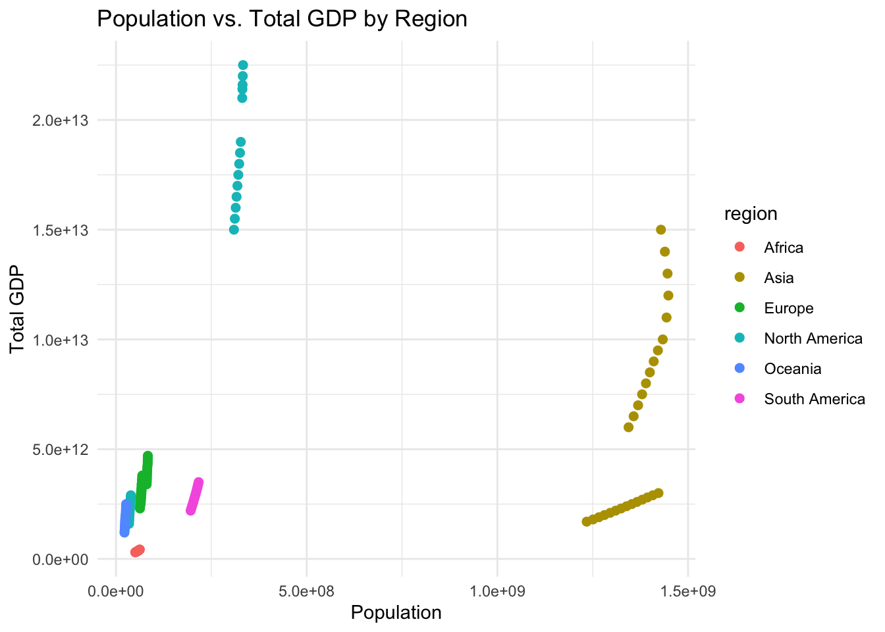

library(ggplot2)
library(dplyr)
library(lubridate)
library(tidyr)
library(readr)
library(lubridate)Lab 2 | Data Wrangling in R
ST 437 Data Visualization
Learning Objectives
- Understand the Importance of Data Wrangling: Recognize the critical role of data wrangling in preparing datasets for accurate and meaningful analysis.
- Master Data Transformation Techniques: Develop the ability to convert raw, untidy data into a structured format suitable for analysis and visualization.
- Emphasize Data Cleaning and Preparation: Learn to identify and correct common data issues such as missing values, inconsistent formats, and incorrect entries.
- Ensure Data Accuracy and Consistency: Gain skills in validating and maintaining the integrity of data throughout the wrangling process.
- Draw Reliable Conclusions: Build confidence in making well-supported decisions and insights based on meticulously prepared and clean data.
Getting Started
First, ensure you have the necessary packages installed and loaded. We will use the dplyr, lubridate, readr, ggplot2, and tidyr packages for our examples.
Downloading R-packages
Use install.packages('Name of Package') to install an R package. Careful! Package names are case sensitive, so install.packages(‘GGplot2’) will not work, but install.packages('ggplot2') will.
Download the Data
Running Code Block Shortcuts
Mac users: Use ⌘ + return to run single or highlighted line(s). Use shift + return to run entire code block
Windows users: Use ctrl + enter to run single or highlighted line(s). Use shift + enter to run entire code block
# Specify the data URL using HTTPS
url1 <- "https://howarder.github.io/ST-437-S25/Datasets/countries.csv"
url2 <- "https://howarder.github.io/ST-437-S25/Datasets/countriesExtraInfo.csv"
# Download the data files from the HTTPS URL and save it as
# countries.csv & countriesExtraInfo.csv
download.file(url1, "countries.csv")
download.file(url2, "countriesExtraInfo.csv")
# Check for the data.
cat("After downloading the data, we now have:\n")After downloading the data, we now have:list.files()[1] "countries.csv" "countriesExtraInfo.csv" "lab_2_files"
[4] "lab_2.html" "lab_2.qmd" "lab_2.rmarkdown" # Read the countries data into R
countriesDs <- read_csv("countries.csv", show_col_types = FALSE)
countriesExtraDs <- read_csv("countriesExtraInfo.csv", show_col_types = FALSE)Verify Datasets with head()
head(countriesDs, 5)# A tibble: 5 × 10
country year region category population gdp gdp_per_capita life_expectancy
<chr> <dbl> <chr> <chr> <dbl> <dbl> <dbl> <dbl>
1 USA 2010 North… First W… 309321666 1.5 e7 48493. 59.4
2 Canada 2010 North… First W… 34030589 1.6 e6 47017. 61.6
3 Brazil 2010 South… Third W… 195713635 2.20e6 11241. 60.1
4 UK 2010 Europe First W… 62822650 2.3 e6 36611. 60.5
5 Germany 2010 Europe First W… 80319030 3.4 e6 42331. 59.3
# ℹ 2 more variables: birth_rate <dbl>, temperature <dbl>head(countriesExtraDs, 5)# A tibble: 5 × 2
country continent
<chr> <chr>
1 USA North America
2 Canada North America
3 Brazil South America
4 UK Europe
5 Germany Europe Description of the Dataset
country: Country name from a predefined list of 10 countries.year: Years between 2010 and 2023.region: Geographical region corresponding to each country.category: Classification of the country as “First World,” “Second World,” or “Third World.”population: Real-world population size for each country and year.gdp: Gross Domestic Product (GDP) in USD millions for each country and year.gdp_per_capita: GDP per capita, calculated as GDP divided by population.life_expectancy: Life expectancy of citzensbirth_rate: Birth rate for each country and yeartemperature: Average temperature in celsius per country
Additional Dataset (countriesExtra.csv)
country: Matches the country names from the main dataset.continent: Continent corresponding to each country.
Tidy Data Wrangling
Important Concepts
Filtering: Filter data based on conditions such as year, country, or region.Selecting: Select specific columns for focused analysis.Mutating: Create new columns, such as cases per 100,000 population.Summarizing: Aggregate data by country, year, or region to find totals and averages.Joining: Combine the main dataset with the additional data based on country.
Filtering
Filtering is essential for narrowing down datasets to the most relevant information, making patterns easier to identify.
Example 1
You are tasked with visualizing trends in life expectancy in Asian countries between 2010 and 2020.
Filtering Process
filteredData <- countriesDs |>
filter(year >= 2010 & year <= 2020 & region == "Asia")
head(filteredData, 5)# A tibble: 5 × 10
country year region category population gdp gdp_per_capita life_expectancy
<chr> <dbl> <chr> <chr> <dbl> <dbl> <dbl> <dbl>
1 India 2010 Asia Second … 1234281170 1.7 e6 1377. 60.4
2 China 2010 Asia Second … 1344130000 6 e6 4464. 59.4
3 India 2011 Asia Second … 1250850970 1.80e6 1439. 61.4
4 China 2011 Asia Second … 1357380000 6.5 e6 4789. 61.3
5 India 2012 Asia Second … 1266340930 1.9 e6 1500. 61.0
# ℹ 2 more variables: birth_rate <dbl>, temperature <dbl>Visualization
ggplot(filteredData, aes(x = factor(year), y = life_expectancy, color = country)) +
geom_point(size = 2) +
labs(title = "Life Expectancy Trends in Asia (2010-2020)",
x = "Year", y = "Life Expectancy") +
theme_minimal()
What did we do here?
By focusing on specific countries and years, filtering allows for more targeted and relevant visualizations, making it easier to analyze trends and patterns specific to the context.
Example 2
Analyze the relationship between GDP per capita and life expectancy in European countries with a GDP per capita above $30,000 for the years 2015-2020.
Filtering Process
filteredData <- countriesDs |>
filter(year >= 2015 & year <= 2020 & region == "Europe" & gdp_per_capita > 30000) |>
left_join(countriesExtraDs, by = "country")
head(filteredData, 5)# A tibble: 5 × 11
country year region category population gdp gdp_per_capita life_expectancy
<chr> <dbl> <chr> <chr> <dbl> <dbl> <dbl> <dbl>
1 UK 2015 Europe First W… 64613160 2.8 e6 43335. 61.7
2 Germany 2015 Europe First W… 81401100 3.90e6 47911. 62.1
3 France 2015 Europe First W… 66628007 3 e6 45026. 61.9
4 UK 2016 Europe First W… 65044668 2.90e6 44585. 63.2
5 Germany 2016 Europe First W… 81686611 4 e6 48968. 62.0
# ℹ 3 more variables: birth_rate <dbl>, temperature <dbl>, continent <chr>Visualization
ggplot(filteredData, aes(x = gdp_per_capita, y = life_expectancy, color = country)) +
geom_line() +
labs(title = "GDP per Capita vs. Life Expectancy in Europe (2015-2020)",
x = "GDP per Capita", y = "Life Expectancy") +
theme_minimal()
What did we do here?
Filtering based on economic indicators allows for focused analysis on the relationship between wealth and life expectancy, removing noise from countries with different economic conditions.
- We used a new (to this course)
geomto create the plot above. Can you locate thegeom? What does it do?
Filtering Challenges
- Population Size in Africa:
- Filter: Only countries from Africa where the population exceeds 50 million.
- Purpose: Isolate data for large African nations to analyze trends specific to highly populated areas.
# Your code goes here...- Economic Data in Europe:
- Filter: Show data only for the years 2015-2020 for European countries with GDP per capita above $30,000.
- Purpose: Focus on wealthy European countries during a specific period to study economic outcomes.
# Your code goes here...- High Birth Rates in Asia:
- Filter: Data for Asian countries where the birth rate is above 2.5.
- Purpose: Analyze regions with high birth rates, possibly indicating population growth trends.
# Your code goes here...- Cold Regions in Asia:
- Filter: Asian countries where the average temperature is below 10°C between 2010 and 2020.
- Purpose: Focus on colder regions in Asia to study how temperature may correlate with other demographic factors.
# Your code goes here...- GDP Data with Missing Values:
- Filter: Remove any entries with missing
gdp_per_capitavalues for the years 2010-2020. - Purpose: Ensure clean data for economic analysis, removing incomplete records that could skew results.
- Filter: Remove any entries with missing
# Your code goes here...Selecting
Selecting allows you to focus on specific columns relevant to your analysis.
Example
selectedData <- filteredData |>
select(country, year, gdp_per_capita, life_expectancy)
head(selectedData, 5)# A tibble: 5 × 4
country year gdp_per_capita life_expectancy
<chr> <dbl> <dbl> <dbl>
1 UK 2015 43335. 61.7
2 Germany 2015 47911. 62.1
3 France 2015 45026. 61.9
4 UK 2016 44585. 63.2
5 Germany 2016 48968. 62.0Visualization
ggplot(selectedData, aes(x = factor(year), y = gdp_per_capita, fill = country)) +
geom_bar(stat = "identity", position = "dodge") +
labs(title = "GDP per Capita Over Time in Selected European Countries",
x = "Year", y = "GDP per Capita") +
theme_minimal()Selecting Challenges
- Select columns related to economic indicators (e.g.,
country,gdp_per_capita,population) for further analysis.
# Your code goes here...- Create a dataset with only the
year,life_expectancy, andtemperaturecolumns for all countries and show the first 5 rows.
# Your code goes here...- Choose columns that exclude any geographical information and check the first 10 rows.
# Your code goes here...- Select and rename the
countryandpopulationcolumns tonationandpop_size, respectively.
*Hint check out the help documentation for the ?rename function from the dplyr package.
# Your code goes here...Mutating
Mutating helps create new columns based on existing data.
# Your code goes here...Example
mutatedData <- countriesDs |>
mutate(gdp_total = gdp_per_capita * population)
head(mutatedData, 5)# A tibble: 5 × 11
country year region category population gdp gdp_per_capita life_expectancy
<chr> <dbl> <chr> <chr> <dbl> <dbl> <dbl> <dbl>
1 USA 2010 North… First W… 309321666 1.5 e7 48493. 59.4
2 Canada 2010 North… First W… 34030589 1.6 e6 47017. 61.6
3 Brazil 2010 South… Third W… 195713635 2.20e6 11241. 60.1
4 UK 2010 Europe First W… 62822650 2.3 e6 36611. 60.5
5 Germany 2010 Europe First W… 80319030 3.4 e6 42331. 59.3
# ℹ 3 more variables: birth_rate <dbl>, temperature <dbl>, gdp_total <dbl>Visualization
ggplot(mutatedData, aes(x = population, y = gdp_total, color = region)) +
geom_point(size = 2) +
labs(title = "Population vs. Total GDP by Region",
x = "Population", y = "Total GDP") +
theme_minimal()
Mutating Challenges
- Add a new column to
mutatedDatathat indicates whether a country’s GDP per capita is above or below a certain threshold (e.g., $20,000).
# Your code goes here...- Mutate the
temperaturecolumn to create a new column,temperature_f, that converts Celsius to Fahrenheit.
Hint: \[F = \bigg(C \times \frac{9}{5}\bigg) + 32\]
# Your code goes here...- Create an
avg_region_birthratecolumn by summing the birth rates of each country within the same region and dividing by the number of countries in that region.
# Your code goes here...- Generate a column that calculates the ratio of birth rate to life expectancy for each country.
# Your code goes here...Summarizing
Summarizing aggregates data by country, year, or region to find totals and averages.
Example
summaryData <- countriesDs |>
group_by(country) |>
summarize(
avg_life_expectancy = mean(life_expectancy, na.rm = TRUE),
total_population = sum(population, na.rm = TRUE)
)
head(summaryData, 5)# A tibble: 5 × 3
country avg_life_expectancy total_population
<chr> <dbl> <dbl>
1 Australia 62.9 342846070
2 Brazil 63.0 2893870215
3 Canada 62.6 509752214
4 China 62.9 19711200000
5 France 63.2 936548551Visualization
ggplot(summaryData, aes(x = total_population, y = avg_life_expectancy, label = country)) +
geom_point(size = 2) +
geom_text(vjust = -0.5) +
labs(title = "Total Population vs. Average Life Expectancy by Country",
x = "Total Population", y = "Average Life Expectancy") +
theme_minimal()Summarizing Challenges
- Summarize the dataset by finding the average temperature for each region.
# Your code goes here...- Aggregate the data to find the total population and average life expectancy for each continent.
# Your code goes here...- Group the data by country and summarize to find the maximum and minimum GDP per capita for each country.
# Your code goes here...- Summarize by year to find the total population and average birth rate each year.
# Your code goes here...- Create a summary that calculates the total population and average GDP per capita for countries classified as “First World.”
# Your code goes here...Joining
Joining combines data from the main dataset with additional data.
Example
joinedData <- left_join(countriesDs, countriesExtraDs, by = "country")
head(joinedData, 5)# A tibble: 5 × 11
country year region category population gdp gdp_per_capita life_expectancy
<chr> <dbl> <chr> <chr> <dbl> <dbl> <dbl> <dbl>
1 USA 2010 North… First W… 309321666 1.5 e7 48493. 59.4
2 Canada 2010 North… First W… 34030589 1.6 e6 47017. 61.6
3 Brazil 2010 South… Third W… 195713635 2.20e6 11241. 60.1
4 UK 2010 Europe First W… 62822650 2.3 e6 36611. 60.5
5 Germany 2010 Europe First W… 80319030 3.4 e6 42331. 59.3
# ℹ 3 more variables: birth_rate <dbl>, temperature <dbl>, continent <chr>Visualization
ggplot(joinedData, aes(x = region, y = gdp_per_capita)) +
geom_boxplot() +
labs(title = "GDP per Capita Distribution by Continent",
x = "Continent", y = "GDP per Capita") +
theme_minimal()Untidy Data Wrangling
Handling Wide vs. Long Formats
Untidy data often comes in a “wide” format, where multiple variables are stored across columns rather than in a long format where each observation is a row.
Creating an Untidy Version
To demonstrate this, let’s take our dataset and select only the country, year, and population to see how pivoting works.
# Create a wide format from the existing long format
popData <- countriesDs |>
select(country, year, population)With the three column dataset, convert it into a wide format, then back to a long format.
wideData <- countriesDs |>
pivot_wider(names_from = year,
values_from = population,
id_cols = country)
# Preview the wide data
head(wideData, 5)# A tibble: 5 × 15
country `2010` `2011` `2012` `2013` `2014` `2015` `2016` `2017` `2018` `2019`
<chr> <dbl> <dbl> <dbl> <dbl> <dbl> <dbl> <dbl> <dbl> <dbl> <dbl>
1 USA 3.09e8 3.12e8 3.14e8 3.16e8 3.18e8 3.21e8 3.23e8 3.25e8 3.27e8 3.31e8
2 Canada 3.40e7 3.43e7 3.46e7 3.49e7 3.53e7 3.56e7 3.60e7 3.64e7 3.71e7 3.77e7
3 Brazil 1.96e8 1.98e8 1.99e8 2.01e8 2.03e8 2.04e8 2.06e8 2.08e8 2.09e8 2.11e8
4 UK 6.28e7 6.32e7 6.35e7 6.39e7 6.42e7 6.46e7 6.50e7 6.55e7 6.61e7 6.66e7
5 Germany 8.03e7 8.06e7 8.09e7 8.11e7 8.12e7 8.14e7 8.17e7 8.19e7 8.22e7 8.29e7
# ℹ 4 more variables: `2020` <dbl>, `2021` <dbl>, `2022` <dbl>, `2023` <dbl>Now, let’s convert this wide data back to a long format.
# Convert the wide format back to long format
longData <- wideData |>
pivot_longer(!country, names_to = "year",
values_to = "population")
# Preview the long data
head(longData, 5)# A tibble: 5 × 3
country year population
<chr> <chr> <dbl>
1 USA 2010 309321666
2 USA 2011 311556874
3 USA 2012 313830990
4 USA 2013 316059947
5 USA 2014 318386421This process shows how data can be reshaped for different analytical needs. Wide format is useful for certain analyses but often needs to be converted to long format for modeling and visualization.
Handling Row Content Split and Reverse
Sometimes, data stored in a single column needs to be split into multiple columns or vice versa.
Merging Two Columns into One
Let’s take the country and year columns and merge them into a single column.
# Combine 'country' and 'year' into a single column
mergedData <- countriesDs |>
unite("country_year", country, year, sep = "_")
# Preview the merged dataset
head(mergedData, 5)# A tibble: 5 × 9
country_year region category population gdp gdp_per_capita life_expectancy
<chr> <chr> <chr> <dbl> <dbl> <dbl> <dbl>
1 USA_2010 North … First W… 309321666 1.5 e7 48493. 59.4
2 Canada_2010 North … First W… 34030589 1.6 e6 47017. 61.6
3 Brazil_2010 South … Third W… 195713635 2.20e6 11241. 60.1
4 UK_2010 Europe First W… 62822650 2.3 e6 36611. 60.5
5 Germany_2010 Europe First W… 80319030 3.4 e6 42331. 59.3
# ℹ 2 more variables: birth_rate <dbl>, temperature <dbl>Splitting the Merged Column Back into Two
# Split the 'country_year' column back into 'country' and 'year'
splitData <- mergedData |>
separate(country_year, into = c("country", "year"), sep = "_")
# Preview the split dataset
head(splitData, 5)# A tibble: 5 × 10
country year region category population gdp gdp_per_capita life_expectancy
<chr> <chr> <chr> <chr> <dbl> <dbl> <dbl> <dbl>
1 USA 2010 North… First W… 309321666 1.5 e7 48493. 59.4
2 Canada 2010 North… First W… 34030589 1.6 e6 47017. 61.6
3 Brazil 2010 South… Third W… 195713635 2.20e6 11241. 60.1
4 UK 2010 Europe First W… 62822650 2.3 e6 36611. 60.5
5 Germany 2010 Europe First W… 80319030 3.4 e6 42331. 59.3
# ℹ 2 more variables: birth_rate <dbl>, temperature <dbl>This demonstrates how to handle situations where data needs to be recombined or separated for different purposes.
Handling Dates
In some cases, it might be necessary to convert a year column from a numeric format (double) into a proper date format for time series analysis or plotting purposes. Here’s how you can do that in R using the lubridate package.
Example
Converting year to a Date
Let’s convert the year column into a date format, setting it as January 1st of that year.
# Ensure the lubridate package is loaded
# Convert the year column to a date format (January 1st of each year)
countriesDs <- countriesDs |>
mutate(year_date = ymd(paste0(year, "-01-01")))
# Check the first few rows to see the new column
head(countriesDs, 5)# A tibble: 5 × 11
country year region category population gdp gdp_per_capita life_expectancy
<chr> <dbl> <chr> <chr> <dbl> <dbl> <dbl> <dbl>
1 USA 2010 North… First W… 309321666 1.5 e7 48493. 59.4
2 Canada 2010 North… First W… 34030589 1.6 e6 47017. 61.6
3 Brazil 2010 South… Third W… 195713635 2.20e6 11241. 60.1
4 UK 2010 Europe First W… 62822650 2.3 e6 36611. 60.5
5 Germany 2010 Europe First W… 80319030 3.4 e6 42331. 59.3
# ℹ 3 more variables: birth_rate <dbl>, temperature <dbl>, year_date <date>What did we do here?
paste0(year, "-01-01"): Combines the year with the string “-01-01” to create a date string like “2010-01-01”.ymd(): Converts the resulting string into a date object in the “Year-Month-Day” format.
This creates a new column, year_date, which is now in the proper date format.
Visualization
ggplot(countriesDs, aes(x = year_date, y = population, color = country)) +
geom_line(size = 1) +
labs(title = "Population Trends Over Time by Country",
x = "Year", y = "Population") +
theme_minimal()Challenges
- Convert year to end of year date:
- Task: Convert the
yearcolumn to a date format, but set it as December 31st of that year. - Purpose: Useful for representing data that summarizes annual results.
- Task: Convert the
# Your code goes here...- Create a quarterly date:
- Task: Convert the
yearcolumn into a date representing the first quarter (e.g., “2010-03-31”). - Purpose: Useful for quarterly analysis.
- Task: Convert the
# Your code goes here...- Mid-year date conversion:
- Task: Convert the
yearcolumn to a date format, setting it as June 30th of each year. - Purpose: Represents mid-year data points.
- Task: Convert the
# Your code goes here...- Use year as a dynamic time period:
- Task: Convert the
yearcolumn to represent the last day of a chosen month (e.g., November). - Purpose: Allows for flexibility depending on the analysis context.
- Task: Convert the
# Your code goes here...Creating a Pseudo-Publication Ready Visualization
We’ll combine all the data wrangling techniques you’ve learned—filtering, selecting, mutating, summarizing, and joining—to perform a detailed analysis and produce a polished, publication-ready visualization.
Creating a Professional-Quality Visualization
Here’s a step-by-step guide to transform and visualize data from 10 countries in the dataset:
# Step 1: Filter the dataset for Asian and European countries from 2020 to 2023
filteredData <- countriesDs |>
filter(year >= 2020 & year <= 2023)
# Step 2: Join with the additional dataset to get continent information
joinedData <- filteredData |>
left_join(countriesExtraDs, by = "country")
# Step 3: Select relevant columns for analysis
selectedData <- joinedData |>
select(country, year, population, gdp_per_capita, life_expectancy, birth_rate, continent)
# Step 4: Mutate the data to create new metrics
mutatedData <- selectedData |>
mutate(
gdp_total = gdp_per_capita * population,
year_date = ymd(paste0(year, "-", ifelse(runif(n()) > 0.5, "06-30", "12-31")))
)
# Step 5: Summarize the data to get average life expectancy, GDP per capita, and total population by country and continent
summaryData <- mutatedData |>
group_by(continent, country) |>
summarize(
avg_life_expectancy = mean(life_expectancy, na.rm = TRUE),
avg_gdp_per_capita = mean(gdp_per_capita, na.rm = TRUE),
total_population_millions = sum(population, na.rm = TRUE) / 1e6 # Convert population to millions
) |>
ungroup()
# Step 6: Create a publication-ready visualization
ggplot(summaryData, aes(
x = avg_gdp_per_capita,
y = avg_life_expectancy,
size = total_population_millions, # Use population in millions for size mapping
color = country
)) +
geom_point(alpha = 0.4) +
scale_y_continuous(limits = c(min(summaryData$avg_life_expectancy) - 1, 66)) + # Adjust y-axis scale to go up to 66
scale_size_continuous(
range = c(5, 15), # Adjust the bubble size range
name = "Total Population (Millions)",
breaks = c(50, 200, 500, 1000, 1500), # Adjust based on realistic population ranges in millions
labels = c("50M", "200M", "500M", "1B", "1.5B") # Correct labels in millions
) +
scale_color_viridis_d(guide = "none") + # Hide the color legend
labs(
title = "Relationship Between GDP per Capita and Life Expectancy Across Countries",
subtitle = "Bubble size represents total population across 2020-2023",
x = "Average GDP per Capita (USD)",
y = "Average Life Expectancy (Years)"
) +
geom_text(aes(label = country), hjust = 0.5, size = 3, color = "black") + # Labels centered
theme_minimal() +
theme(
text = element_text(family = "Georgia"),
plot.title = element_text(size = 11, face = "bold"),
plot.subtitle = element_text(size = 9, face = "italic"),
axis.title = element_text(size = 8),
legend.title = element_text(size = 8),
legend.text = element_text(size = 8),
legend.position = "bottom"
)Review & Scrutinize
Answer the following two questions about the plot created above.
What is this visualization?: Write a brief paragraph describing the design, purpose, and key message of the plot. Explain what the visualization is intended to show and how it effectively communicates the data.
Critique: In 2-4 sentences, discuss what makes the plot polished and professional. Identify any characteristics of the plot that could be improved upon.
Submit your work
To demonstrate your understanding and comfort with wrangling data, you’ll need to submit your completed and rendered document to Canvas.
Please ensure you have executable code in all of the chunks labeled # Your code goes here... and have written answers to the two questions stated in the Review & Scrutinize section.
In the YAML of this file, change format to pdf and eval to true. Then render the document. Submit both your .qmd and PDF files to the Data Wrangling Lab Activity on Canvas.